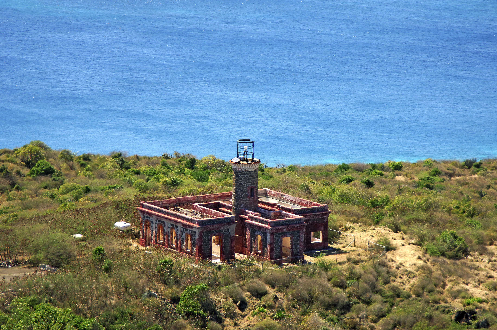

Playa Flamenco
Clasificada como una de las mejores playas del mundo, Flamenco es una extensión de postal perfecta de arena blanca y aguas turquesas. Esta playa prácticamente no tiene olas, lo que la hace ideal para bucear, nadar, relajarse, jugar en la arena o simplemente disfrutar de la playa. Flamenco cuenta con amenidades como, socorristas, área para acampar, regaderas, vestidores y baños, área de estacionamiento y quioscos donde podrá encontrar auténtica comida puertorriqueña.
-
Pueden visitar la playa Flamenco en:
- Dirección: Flamenco, Culebra 00775
- Dirección:Fraile, Culebra
- Dirección:8P68+5P4, Fraile, Culebra 00775
- Dirección:8Q7F+C2Q, Fraile, Culebra
Culebrita
Esta hermosa isla deshabitada se encuentra frente a la costa de Culebra, otra de las hermosas islas de Puerto Rico. Para llegar a esta isla, los visitantes deberán alquilar un barco o visitar una empresa de turismo local. Al igual que Culebra, Culebrita es una isla paradisíaca con impresionantes playas conocidas por sus aguas cristalinas y arena fina.
-
Pueden visitar a Culebrita en:
Museo de Historia de Culebra

En el Museo Histórico de Culebra "El Polvorín", los visitantes aprenderán sobre la historia única de la isla, desde los habitantes indígenas taínos hasta la ocupación militar más reciente por parte de la Marina de los EE. UU. El pequeño museo alberga artefactos arqueológicos, fotografías históricas y muchos otros elementos históricos relacionados con la historia de esta isla virgen española.
-
Pueden visitar el Museo de Historia de Culebra en:
Faro de Culebrita
El Faro Culebrita es la única estructura de la época española que queda en el archipiélago de Culebra, en Puerto Rico. La construcción del faro comenzó el 25 de septiembre de 1882, y se completó el 25 de febrero de 1886. La Corona española construyó el faro para ayudar a proteger su reclamación sobre la isla principal de Culebra. Es el más oriental de los faros de Puerto Rico. Guía a la navegación a través del Paso de la Virgen y paso de Vieques en conexión con el sistema de faros de Puerto Rico con el faro del cabo San Juan. Fue uno de los faros más antiguos en funcionamiento en el Caribe hasta 1975, cuando la Armada y la Guardia Costera de EE.UU. cerraron la instalación. La Guardia Costera de los Estados Unidos ha sustituido la instalación con un faro de luz solar.
-
Pueden visitar el Faro de Culebrita en: